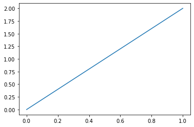
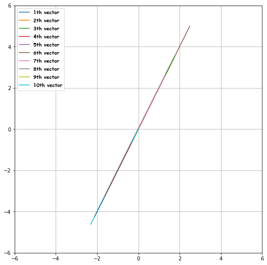

Vector Operations
The following notes use reference from Mike X Cohen: Linear Algebra: Theory, Intuition, Code, 2021., Sheldon Axler: Linear Algebra Done Right, 2015. and Wikipedia for intuitions, examples, formal definitions and theorems. Since I am at the introductory chapters, I will breeze through them until vector spaces.
Table of Contents
- Learning Objectives
- Vectors
Learning Objectives
- Definition of a Vector
- Vector Operations with both Algebraic and Geometric understanding.
Vectors
Geometric Definition (Vectors)
Definition
A vector can be interpretated as an geometric object (line) that are determined by magnitude and direction.
Example (Vector vs Coordinate)
One thing to note is that a vector is different from a coordinate/point:
Consider the following diagram 2.3, the three coordinates (circles) are distinct, but the three vectors (lines) are the same, that is because all 3 vectors can be described by "move from the start 1 unit to the right, and 2 units down" (read: all 3 vectors have the same magnitude and direction and can be represented by the vector \([1 -2]\)). When the vector is in its standard position (the black vector), the head of the vector \([1 -2]\) overlaps with the coordinate \([1 -2]\). - Mike X Cohen: Linear Algebra: Theory, Intuition, Code, 2021. (pp. 25)

Fig 2.3: 3 of the same vectors with different starting coordinates; By Hongnan G.
Vector is Invariant under Coordinates
The geometric interpretation is important and it deserves a spot of its own, we often say that a vector is invariant under coordinates1.
A given vector is the same vector, regardless of how we identify its coordinates with respect to a particular basis. The vector is pointing in a certain direction, with a certain length, in space. If you "moved space around the vector" but left the vector alone, its coordinates would change, but it would still be the same vector. That's just another way of looking at expressing a vector in a different basis. At this stage, going deep into basis will be too much, but just think of basis of our point of reference, and in our case, we are using the origin as our point of reference.
Algebraic Definition (Vectors)
Warning
The algebraic definition of vectors vary from different texts, though the idea is organically the same. We will pick one and stick to it!
Definition
For a field \(\F\) and a positive integer \(n\), a vector \(\v\) with \(n\) entries \(v_1, v_2, \cdots, v_n\), each \(v_i\) belonging to \(\F\), is called an \(n\)-vector over \(\F\). In particular, \(\v\) is ordered and can be represented mathematically as:
The set of \(n\)-vectors over \(\F\) is denoted \(\F^n\). We will deal with this more in vector spaces, just keep a mental note here.
Equality of Vectors
Definition
- By definition of the geometrical interpretation of vectors, two vectors are equal if and only if they have the same magnitude in the same direction, which is why even though figure 2.3's 3 vectors look visually different, but are actually the same vector.
- By definition of the algebraical interpretation of vectors, two vectors \(\v_1\) and \(\v_2\) are equal if and only if each elements of \(\v_1\) is equal to \(\v_2\).
Vector Orientation
A column vector \(\v \in \R^n\) is defined as:
and a row vector \(\v \in \R^n\):
Info
By convention, a vector \(\v\) is a column vector unless stated otherwise.
Example of Column and Row Vectors
The author from Linear Algebra: Theory, Intuition, Code gave some examples in python, I've added my own comments below.
import numpy as np
# array, no orientation
v = np.array([1, 2, 3])
print(f"v: {v}")
print(f"v shape: {v.shape}")
# col. vector, note that the shape is (3, 1), means a 3 by 1 vector
col_v = np.array([[1], [2], [3]])
print(f"col_v: \n{col_v}")
print(f"col_v shape: {col_v.shape}")
# row vector, note that the shape is (1, 3), means a 1 by 3 vector
row_v = np.array([[1, 2, 3]])
print(f"row_v: {row_v}")
print(f"row_v shape: {row_v.shape}")
v: [1 2 3]
v shape: (3,)
col_v:
[[1]
[2]
[3]]
col_v shape: (3, 1)
row_v: [[1 2 3]]
row_v shape: (1, 3)
Transposed Vector
Definition (Transposed Vector)
Definition
By definition, the transpose of a row vector \(\v\) is defined as:
We can also tranpose a column vector to get the row vector. Worth mentioning that for any \(\v \in \R^n\), \(\v^\top = (\v^\top)^\top\).
Vector Addition and Subtraction
Algebraic Definition (Vector Addition and Subtraction)
We will go through the algebra definition first as it is easier to understand.
Definition
For any vector \(\mathbf{a}, \mathbf{b} \in \R^n\), the vector addition and subtraction can be defined as follows:
Geometric Definition (Vector Addition and Subtraction)
The geometry intuition is best done with examples, with some reference from Linear Algebra: Theory, Intuition, Code. Consider the vector
corresponding to \(\u\) and \(\v\) in the diagram respectively.
Vector Addition
On the left of figure 2.5:
To add two vectors \(\u\) and \(\v\), we first draw out vector \(\u\) and \(\v\) using \(0\) as the origin point. Then, the first way is to just look at one of the vector, say \(\u\), and adding \(\v\) just means at the head of the vector \(\u\), move \(8\) units to the right on the x-axis, and \(4\) units upwards on the y-axis to reach \(\u+\v = \begin{bmatrix} 12 & 11 \end{bmatrix}^\top\).
Another way is to put the start (tail) of vector \(\v\) at the end (head) of vector \(\u\). But in the diagram, the head of \(\u\) does not "directly connect to" the tail of \(\v\). This is where we revisit our definition of vectors interpreted geometrically. Remember that vectors are defined by their direction and magnitude, so if one moves vector \(\v\) from \(\begin{bmatrix} 4 & 7 \end{bmatrix}^\top\) to exactly where the head of \(\u\) is, then this is the head-to-tail method detailed in the previous paragraph. Note that to be exact, we shifted the blue vector \(\v\) up to the head of \(\u\), as shown in the diagram's legend. We can do this because we are not actually changing the direction and the magnitude of the vector \(\v\).
Vector Subtraction
There are two ways to look at subtraction. We first distinct to the readers the red vector is \(\u\) and blue vector is \(\v\), both starting from the origin.
First way: we know that \(\u - \v = \u + (-\v)\) and thus we can translate the subtraction problem to addition by multiplying one of the vector, here we multiply \(\v\) by \(-1\). Note that \(-1 \cdot \v = \begin{bmatrix} -8 & -4 \end{bmatrix}^\top\). And then we can use back vector addition. Note that we should bear in mind that we can "move" the vectors freely so that the head-to-tail rules can be applied. This method corresponds to "bottom left side of the diagram".
Second way: The second way to think about vector subtraction is to keep both vectors in their standard position, and draw the line that goes from the head of the subtracted vector (the one with the minus sign) to the head of the other vector (the one without the minus sign) (This method corresponds to "upper right side of the diagram"). That resulting vector is the difference. It’s not in standard position, but that doesn’t matter. - Mike X Cohen: Linear Algebra: Theory, Intuition, Code, 2021. (pp. 32)
Info
Something worth noting is \(\u - \v = -(\v - \u)\). Geometrically, this means that \(\u - \v\) flips \(\v - \u\) 180 degrees.

Fig 2.52: Vector Addition and Subtraction; Courtesy of Macro Analyst.
Vector Addition is Commutative
Info
Although we have not formally define a vector space over a field, we can chime in now and say that if a set of vectors \(V\) are defined over a field \(\F\), then all vectors in \(V\) are commutative by definition of a Field. Therefore, the vector addition example can be done from \(\b\) to \(\a\) instead of \(\a\) to \(\b\). The power of defining objects over a field is that any vectors over this \(\F\) must obey all the rules/laws above, and commutative is one of them.
Vector-Scalar Multiplication
Algebraic Definition (Vector-Scalar Multiplication)
We go through the algebra definition first as it is easier to understand.
Definition
For any vector \(\v \in \R^n\) and scalar \(\lambda \in \R\), the vector expression \(\lambda \v\),
is called the Vector-Scalar Multiplication.
Geometrical Definition (Vector-Scalar Multiplication)
Positive Scaling
The easiest part is to scale a vector positively. For example, a vector \(\begin{bmatrix}1 & 2 \end{bmatrix}^{\rm T}\) when scaled with a scalar \(\lambda = 3\) gives \(3\begin{bmatrix}1 & 2 \end{bmatrix}^{\rm T} = \begin{bmatrix}3 & 6\end{bmatrix}^{\rm T}\), and the diagram below illustrates the relationship. Notice that the orientation of the vector did not change, in other words, the magnitude of the scaled vector changed by a factor of \(3\), but the direction did not change.
Negative Scaling
The more confusing part is to scale a vector negatively. For example, a vector \(\begin{bmatrix}1 & 2 \end{bmatrix}^{\rm T}\) when scaled with a scalar \(\lambda = -1\) gives \(-1\begin{bmatrix}1 & 2 \end{bmatrix}^{\rm T} = \begin{bmatrix}-1 & 2\end{bmatrix}^{\rm T}\), diagram 2.6 below illustrates the relationship.
Note that even though the negatively scaled vector will point to the opposite direction, the "orientation" of the scaled vector did not change. Imagine \(\begin{bmatrix}1 & 2 \end{bmatrix}^{\rm T}\) is extended infinitely long both sides, then all scaling of this vector will still be on this line.

Fig 2.6: Vector-Scalar Multiplication; By Hongnan G.
Key Properties (Vector-Scalar Multiplication is Invariant under Rotation)
Vector-Scalar Multiplication Invariance
Vector-scalar multiplication is conceptually and computationally simple, but do not underestimate its importance: Stretching a vector without rotating it is fundamental to many applications in linear algebra, including eigendecomposition. Sometimes, the simple things (in mathematics and in life) are the most powerful. - Mike X Cohen: Linear Algebra: Theory, Intuition, Code, 2021. (pp. 36)
Vector-Scalar Multiplication is Commutative
Info
Similar to the commutative property in vector addition, vector-scalar multiplication is commutative as well. Therefore, the vector-scalar multiplication \(\lambda \v = \v \lambda\).
Norm (Magnitude) of a Vector
Definition (Norm of a Vector)
Definition
The length or the magnitude of a vector \(\v \in \R^n\) with elements \(v_1, v_2, \cdots, v_n\) is defined as:
Exercise (pp. 41 of Linear Algebra: Theory, Intuition, Code, 2021.)
Create a 2D vector v, 10 scalars that are drawn at random from a normal (Gaussian) distribution, and plot all 10 scalar-vector multiplications on top of each other. What do you notice?
You'll notice that all scaled versions of the vector form a line.
import numpy as np
import matplotlib.pyplot as plt
# 2d col vector
v = np.array([1, 2])
# plot it
plt.plot([0, v[0]], [0, v[1]]);

import matplotlib.font_manager as font_manager
from numpy.random import default_rng
rng = default_rng()
fig, ax = plt.subplots(figsize=(9, 9))
# and then plot scaled versions on top
legends = []
for i in range(100):
# random scalar
s = rng.standard_normal(1)[0]
# scaled vector
sv = s * v
plt.plot([0, sv[0]], [0, sv[1]])
legends.append(f"{i+1}th vector")
font = font_manager.FontProperties(
family="Comic Sans MS", weight="bold", style="normal", size=10
)
# only show first 10 legends!
plt.legend(legends[0:10], loc="upper left", prop=font)
plt.grid("on")
plt.axis("square")
plt.axis([-6, 6, -6, 6])
plt.show();
